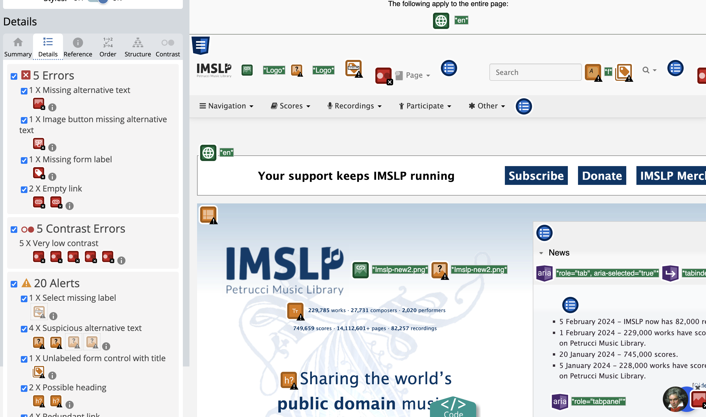
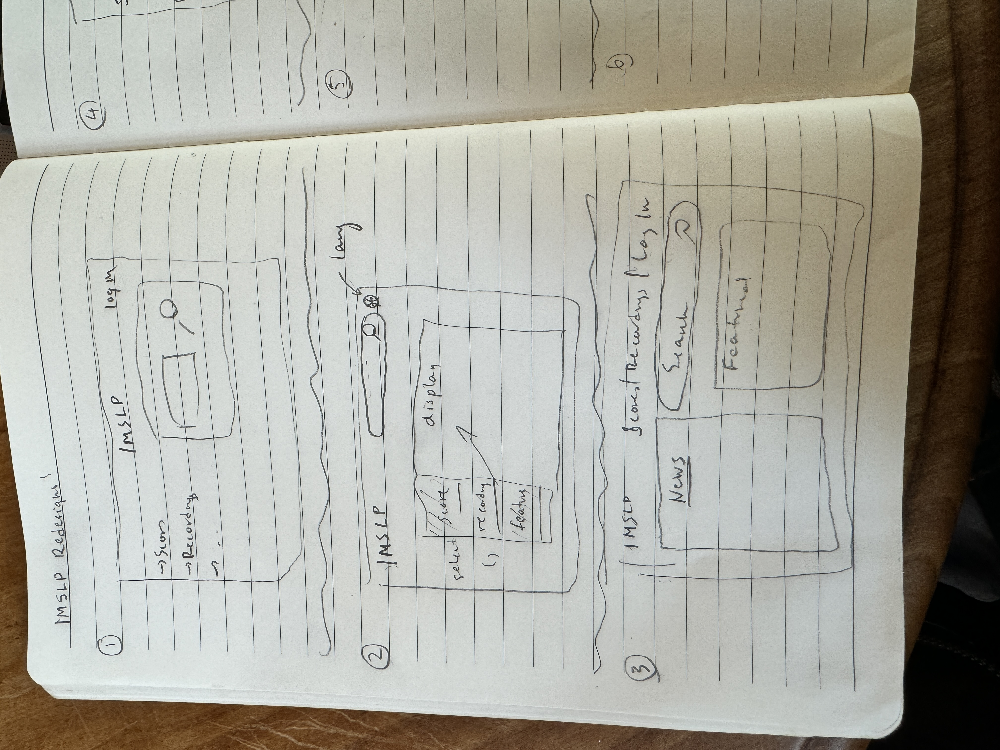
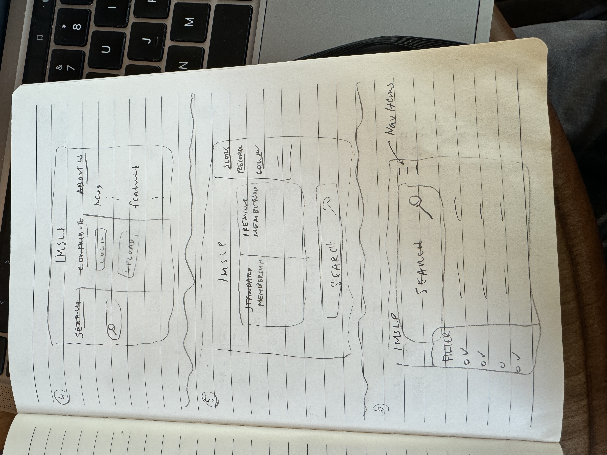
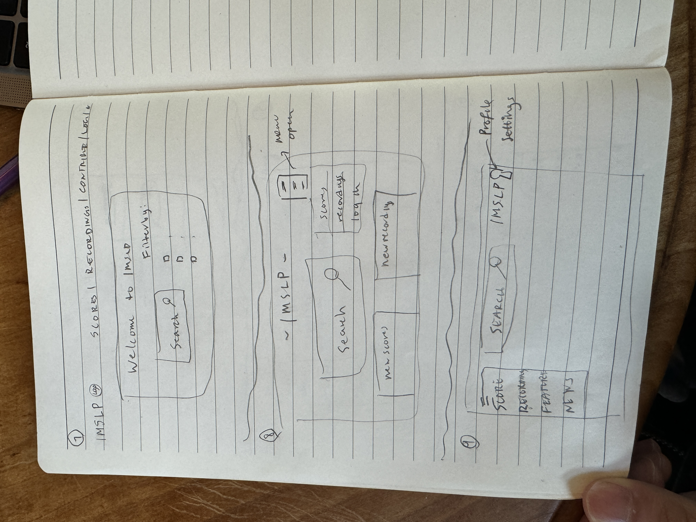
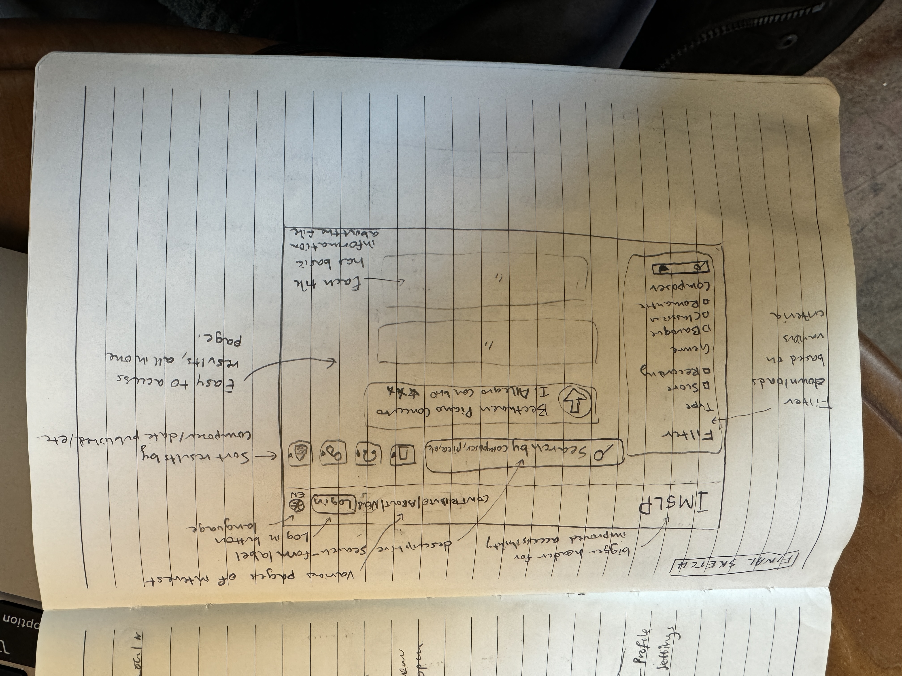
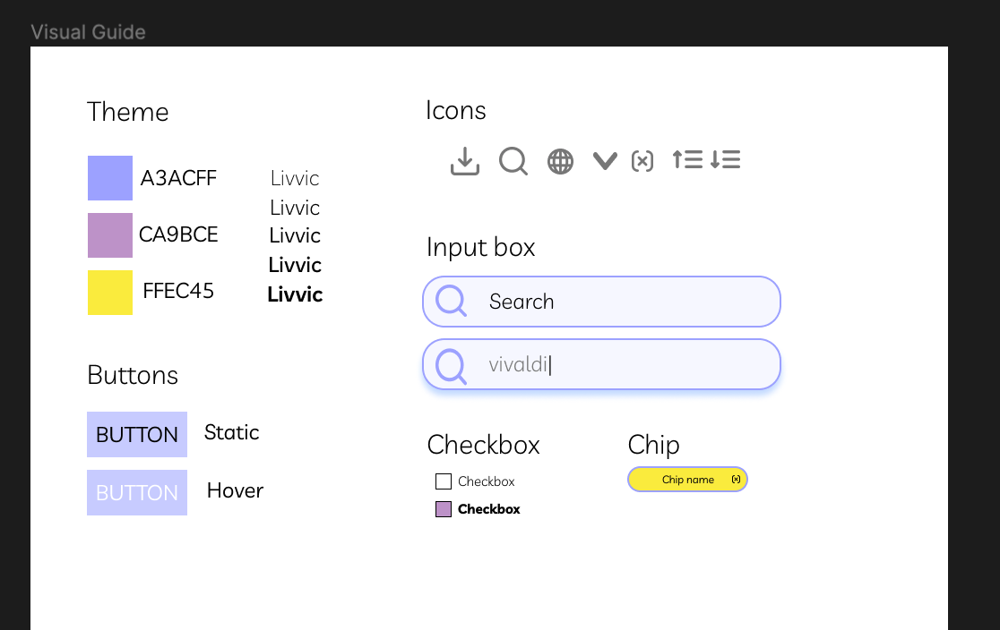
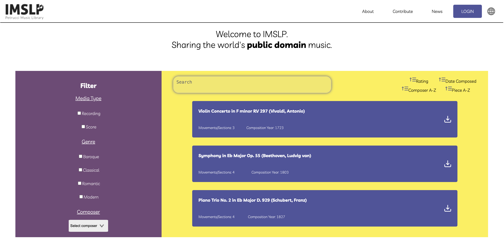
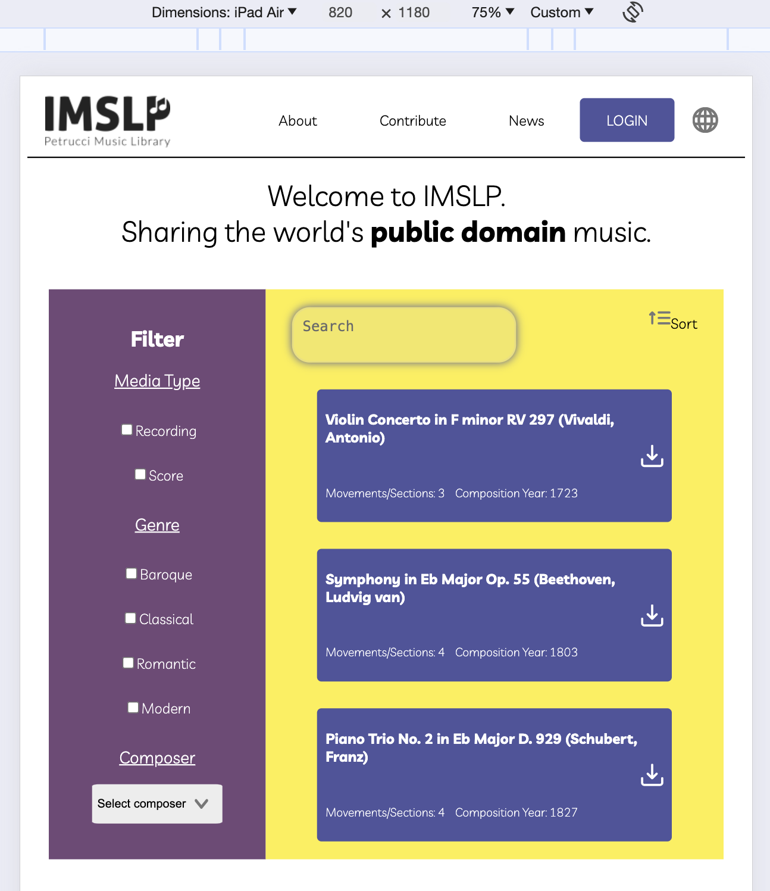
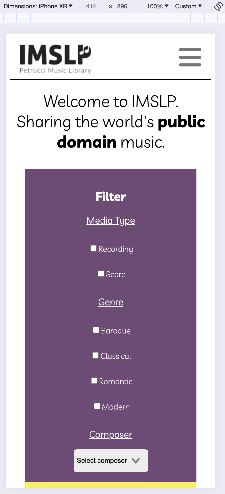
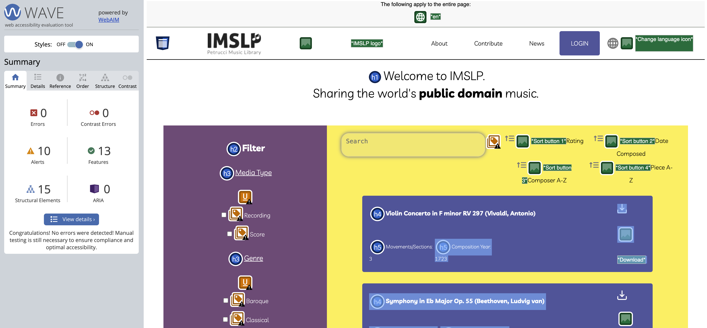

The purpose of this assignment is to evaluate an existing interface for accessibility, visual design, responsiveness, and usability and then by following the design process, develop a new responsive website addressing the issues found in the original interface.
For my assignment, I chose to redesign IMSLP, which stands for the International Music Score Library Project. IMSLP is a website commonly used by classical musicians to search for and download sheet music and recordings of classical music available in the public domain. However, the website has not been updated in several years, and because of its popularity, a redesign would help improve its ease-of-use for many musicians and music scholars.
I began by searching IMSLP for various issues relating to usability and accessibility. Here was a list of issues I noticed as a user.
Here is a screenshot of the IMSLP website, alongside an assessment on accessibility.
My design process began with 9 sketches of potential redesigns. I gave myself roughly 9 minutes to complete these sketches.
  My final sketch I chose to work with was the following.
The next step involved extending my final sketch to three wireframes, corresponding to mobile, tablet, and desktop interfaces.
After completing the low-fidelity mockups, I transitioned into Figma to complete a high-fidelity mockup. I created the following style guide to define various elements, such as buttons, icons, fonts, font weights, and color palette.
My final design tries to aggregate the primary functionality of IMSLP into one area in the screen. The original IMSLP website has lots of buttons, many with very obscure features that would not be used by the normal user. In my revised interface, I present a screen where users can easily search for scores and recordings and filter based on the same criteria as the original website (composition date, composer, etc.). The original IMSLP website also had two navigation features (one was a dropdown, and the other a bar). To simplify this part of the interface, I simply included the relevant navigation features as a navigation bar component at the top of the page. The main change to the design, however, is keeping the media results on the same page as the query. The original design uses a Google Search channel to find results, which presents an inconsistent UI design and unnecessary navigation confusion. By embedding everything into one screen, I hope that my design simplifies the search process for users. Here are some screenshots of my final redesign!
   As you can see, it performs fairly well in the WAVE evaluation.
I noticed that going from my high-fidelity mockup to my responsive redesign was quite a time-consuming process. If I had more time, I would have liked to perfect more of the components of the interface, such as hover animations and incorporating more icons. I think that while my final design resembles my initial sketch, I learned the the design process seems to involve several iterative changes across the stages. For example, I did not realize that the color palette I had chosen initially would have contrast issues in my final design, thus I had to make some of the colors darker to address accessibility issues. Finally, making the design adapt to different screen sizes is a big challenge. It is almost like building separate designs for different devices. I am curious as to approaches of making this process easier. I found the assignment very helpful in refining my HTML/CSS skills, especially in using different display formats (flex vs. grid, justify-content) to align elements the way I had in my mockups.